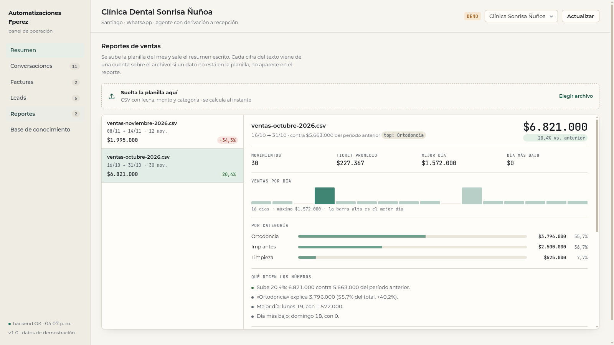

Módulo de reportes para pymes. Se sube el CSV de ventas y el sistema calcula totales, comparación con el período anterior, mejor y peor día, reparto por categoría y las observaciones que esos números sostienen. El texto se arma con plantillas: no hay un modelo inventando cifras, así que el reporte siempre coincide con la planilla. Cero costo por reporte.

Todo son funciones puras sobre el archivo: la misma planilla da siempre el mismo reporte, y cada frase del texto se puede rastrear hasta una cuenta.
Detecta el separador (;, , o tab), las cabeceras en español o inglés
(fecha/date, monto/amount, categoría/category) y los montos en formato
chileno ($1.240.000), con decimales (1.234,56) o planos. Las fechas pueden venir ISO
o dd/mm/aaaa. Las filas que no tienen fecha y monto válidos se ignoran en vez de romper el
reporte.
El período se parte en dos mitades iguales: la segunda es el período del reporte y la primera es con lo que se compara. De ahí salen total, variación porcentual, ticket promedio, mejor y peor día, reparto y variación por categoría. Si no hay período anterior con ventas, el reporte lo dice en vez de inventar un +100%.
Trece observaciones con código estable: total_up, total_down,
category_drop, category_jump, concentration, best_day,
refunds, negative_total, no_previous, low_volume, entre
otras. Cada una tiene un umbral (por ejemplo, concentración cuando una categoría pasa el 60% del total). Si
ninguna se cumple, el texto no adorna: dice lo que hay.
El panel muestra el reporte con sus barras y lo deja copiar al portapapeles o descargar en Markdown, listo para pegarlo en el correo o en el grupo del negocio. Cada planilla se guarda con su hash: si se sube el mismo archivo dos veces, se abre el reporte existente en vez de duplicarlo.
Set de 30 planillas armadas para cubrir lo que llega de verdad: meses completos, caídas y
crecimientos fuertes, períodos planos, primera planilla sin historial, una sola categoría, devoluciones en
negativo, meses en rojo, pocos movimientos, días vacíos, fin de semana concentrado, filas inválidas mezcladas y
formatos de archivo distintos. Se corre con eval_reportbot.py y cada corrida queda guardada en la
base.
| Métrica | Valor | Cómo se mide |
|---|---|---|
| Planillas con cifras correctas | 30/30 (100%) | total, período anterior y variación contra la aritmética directa sobre el archivo |
| Categoría principal | 30/30 | la de mayor venta en el período, con desempate estable |
| Observaciones | 100% | códigos que debían aparecer y códigos que no debían aparecer |
| Total presente en el texto | 100% | el resumen escrito cita el total con formato chileno |
| Latencia por planilla | 0,6 ms mediana · 2,8 ms máximo | de CSV a texto, en el contenedor de la API |
| Costo por reporte | US$ 0 | no hay llamada a modelo ni servicio externo |
Ejemplo del texto que sale, sin retocar (reporte de octubre de la demo):
**Resumen de Clínica Sonrisa Ñuñoa** — 16/10 a 31/10 Total: **6.821.000** (período anterior 5.663.000, +20,4%) Movimientos: 30 · ticket promedio 227.366,67 Por día: ▂▂▁█▂▂▂▂▂▁▇▂▂▂▂▂ Por categoría: · Ortodoncia: 3.796.000 (55,7%, +40,2%) · Implantes: 2.500.000 (36,7%, +0,0%) · Limpieza: 525.000 (7,7%, +15,4%) Qué dicen los números: · Sube 20,4%: 6.821.000 contra 5.663.000 del período anterior. · «Ortodoncia» explica 3.796.000 (55,7% del total, +40,2%). · Mejor día: lunes 19, con 1.572.000. · Día más bajo: domingo 18, con 0.
Las tres que cambian el resultado y el costo de operarlo.
Un LLM redacta bien, pero si inventa un número el reporte es un problema, no un ahorro. Acá la aritmética y las frases se arman con código: el total del texto es el mismo número que salió de la suma, siempre. Si más adelante se quiere un texto más conversacional, el modelo puede reescribir el resumen con las cifras ya fijadas, sin tocarlas.
Casi todo reporte automático se cae en la primera línea: «subió 300%» contra un período que no existía. Acá la comparación es explícita y, cuando no hay base, el texto lo declara. Es menos vistoso y más útil para decidir.
«Las ventas vienen bien» no se puede auditar. Cada observación tiene un código y un umbral escrito (una caída de categoría sólo se marca si supera el porcentaje definido), así que se puede discutir la regla y ajustarla, igual que en el resto de la suite.
Las 30 planillas viven en el repo con su golden.json, y el eval escribe cada corrida en la
base. Si mañana se cambia un umbral o un formato de lectura, la cifra sube o baja y se ve. Publicar «30/30»
sin el set que lo respalda es exactamente lo que este eval evita.
Preferible decirlo acá que descubrirlo en producción.
Describe lo que pasó en la planilla. No proyecta el próximo mes ni detecta estacionalidad con dos períodos de historia.
Trabaja con el monto tal como viene en el archivo: no calcula IVA, no cruza con facturas emitidas ni reemplaza el cierre contable.
La comparación es contra la primera mitad del rango que trae la planilla. Para comparar octubre completo contra septiembre completo hay que subir el archivo con los dos meses, y el reporte usa esa historia.
Las planillas del panel son de una clínica ficticia; los números publicados salen de correr el eval sobre el set del repo.